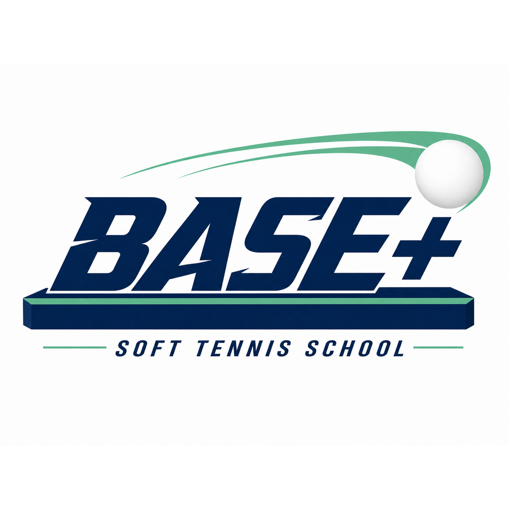
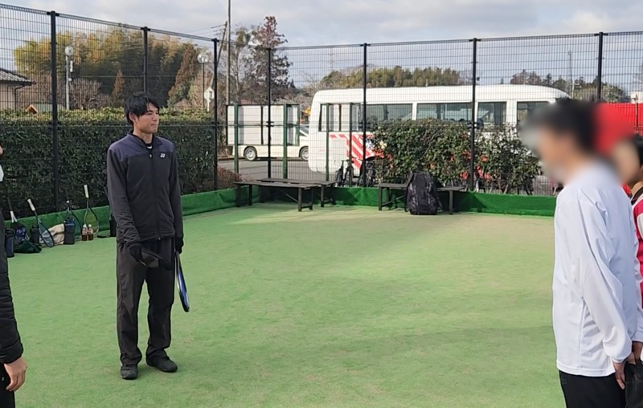
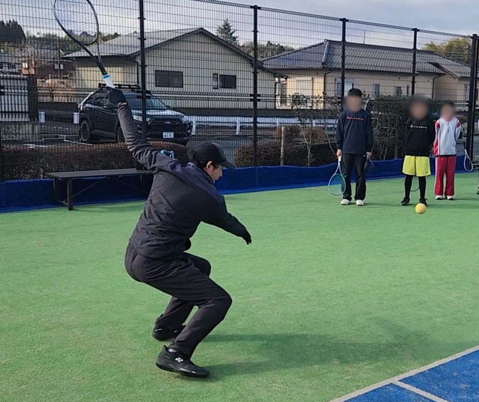

現役プロが直接指導
試合で使える技術と判断を学ぶ。


ソフトテニススクール千葉県・市原市 / 中高生専門
日本一を目指す現役プロ × 理学療法士。
勝つための思考と身体を磨くチーム指導。
基本は火曜開催 ｜ 24時間受付中 ｜ 相談だけでもOK
SCROLL
試合で使える技術と判断を学ぶ。
ケガ予防と動ける身体づくり。
癖や課題をその場で修正。
DOES THIS SOUND LIKE YOU?

もっと勝ちたい必要なのは練習量だけじゃない。
なぜそうなるかを理解すること。
WHY BASE+
フォームだけ、身体づくりだけでは試合は変わらない。
BASE+は技術・身体・心をつなげて、試合で出せる力に変えていきます。
MIND & GAME CONTROL
心TECHNIQUE & TACTICS
技PHYSICAL & CARE
体3つを掛け合わせて、試合で使える武器に変える。
MEET THE COACHES

PLAYER
×
COACH
代表コーチ / 現役プロ選手
試合で勝つために必要なことを、
一人ひとりに合わせて伝えます。
全国の舞台で培った実戦感覚を、分かりやすい言葉に変えて指導。技術の形だけでなく、いつ使うか・なぜ選ぶかまで伝えます。

PHYSICAL
×
COACH
トレーナー兼コーチ / 理学療法士
ケガを防ぎながら、
思い切り動ける身体をつくります。
理学療法士の視点で動きを見て、身体の使い方を分かりやすく指導。成長期の選手が安心して競技を続けられるよう、ケアとパフォーマンス向上を支えます。
GROWTH STORIES
レッスンで感じた変化や、試合への向き合い方の変化を紹介していきます。
指導の分かりやすさや、安心して通えるポイントを掲載していきます。
VOICE SAMPLE / 掲載イメージ
打ち方だけでなく、相手の立ち位置を見て次の一本を選ぶ考え方を教えてもらえました。練習試合でも、自分から声を出せるようになりました。
以前は結果だけで落ち込むことが多かったのですが、今は何を直せばいいかを自分の言葉で話してくれます。身体の面も見てもらえるので安心です。
SCHEDULE & ACCESS
会場：臨海第2庭球場（市原市岩崎268） / 臨海第1庭球場（市原市岩崎536）
通常は臨海第2庭球場で開催。
会場調整時は、公式LINEで事前にお知らせします。
PROGRAM & PRICE
REGULAR
初心者〜経験者向け
単発2,800円
4回チケット10,000円2か月有効
8回チケット16,000円3か月有効
選考制
ATHLETE
大会で勝ちたい選手向け
4回チケット13,000円2か月有効
8回チケット19,000円3か月有効
※単発受講はありません
PRIVATE
個別課題を集中修正したい方向け
2時間16,000円〜
EASY 3 STEPS
ボタンから公式LINEへ
学年・経験・希望日を送信
動きやすい服装でコートへ
FAQ
競技志向の中高生を中心としたスクールです。経験が浅い方も、現在のレベルと目標をLINEで伺ったうえで最適なクラスをご案内します。
はい、可能です。実際の指導内容やお子さまの様子を安心してご覧いただけます。
中止・振替などの判断は、参加者向けの連絡手段で速やかにお知らせします。
現在は火曜日の19:00〜21:00を中心に開催しています。人数やコート状況に応じて、水曜日や17:00〜19:00枠も順次用意していく予定です。
READY TO LEVEL UP?
内容の相談だけでも大丈夫です。
まずは気軽にメッセージを送ってください。